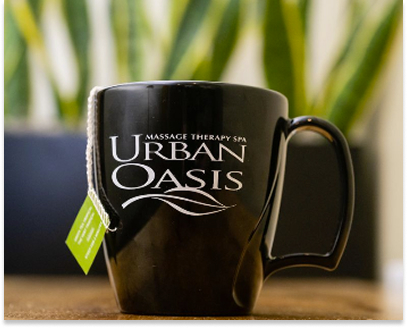
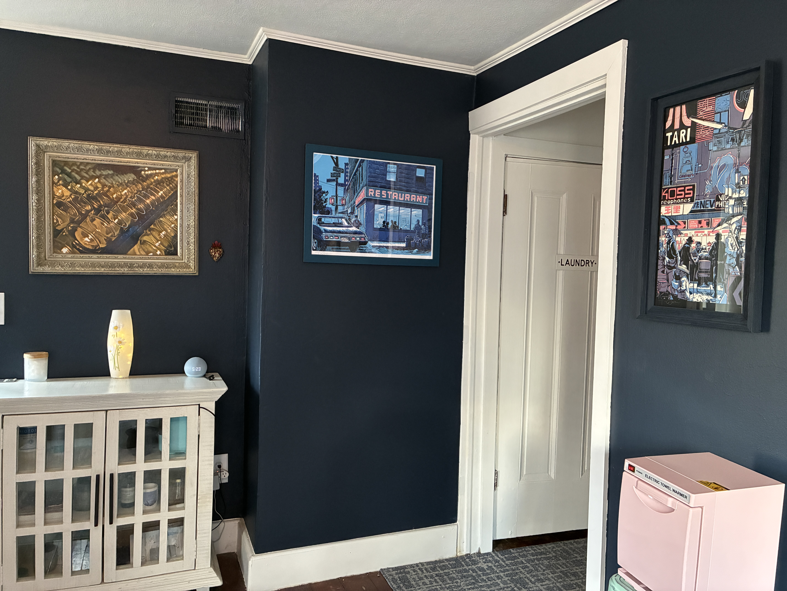
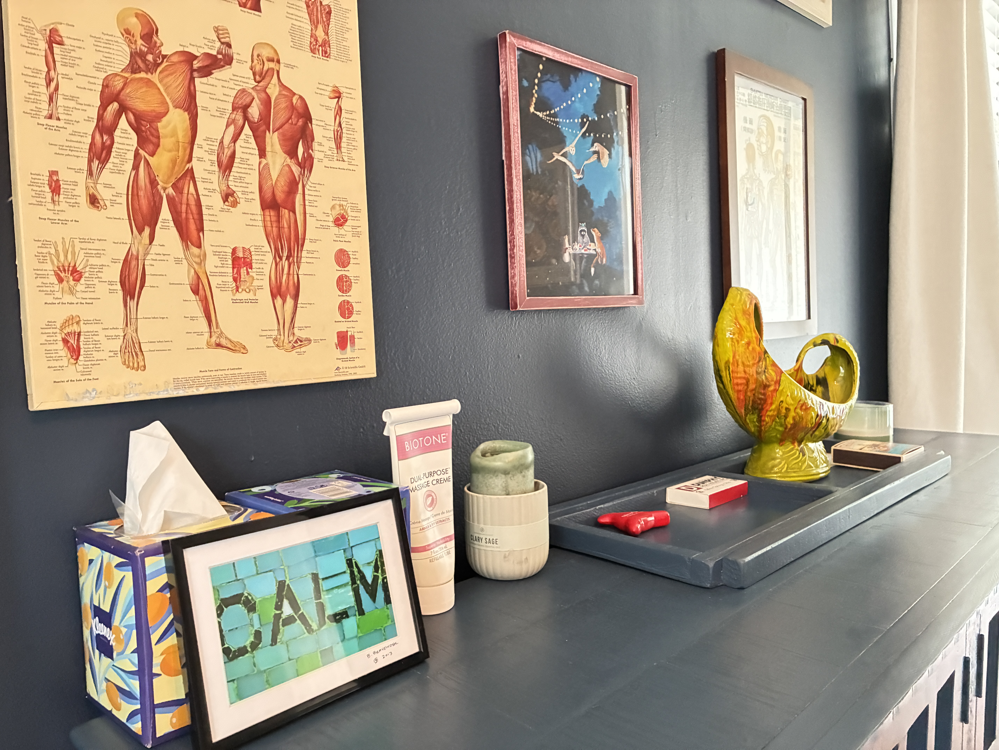

a Haiku 🍵
I am Samina
Eighteen years of Bodywork
City to Village




My LMT journey began in Chicago, 2008. I was fascinated with the power behind manipulating soft muscle tissue for transformative healing. Simply put, I was (and still am) fascinated with the human body, and it's ability to heal, given the proper care.
I gravitated towards medical massage, offering sliding scale rates in mobility clinics, working along side doctors in chiropractic clinics, and trading bodywork with other like-minded healers, learning as many modalities as I could, eventually crafting my own style and intuition.
With 300 additional hours in Thai Massage training, I took this knowledge to New Orleans, where I assisted in developing The Signature Table Thai Massage at the Ritz Carlton spa.

I moved to Yellow Springs in July of 2022. I began to slow down
from the city pace, getting to know my neighbors, and how I could
help the community.
I did a soft bodywork opening with a few
neighbors, receiving positive feedback. This feedback turned into
return clients, and then more clients!
Today I serve the
best clients in the village, and am grateful. Thank you
